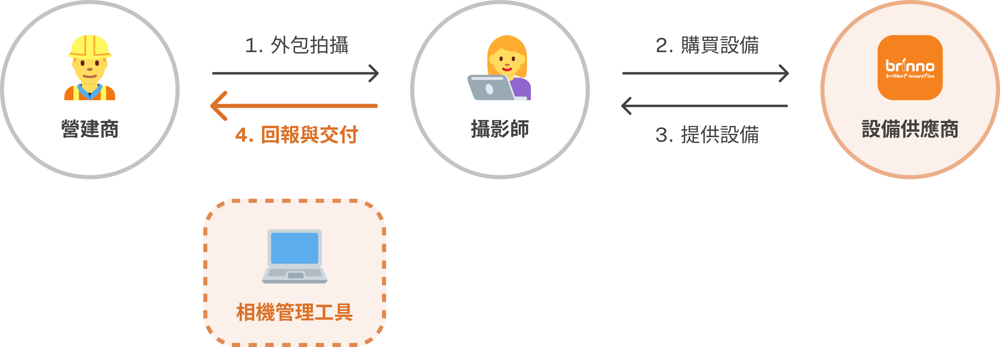
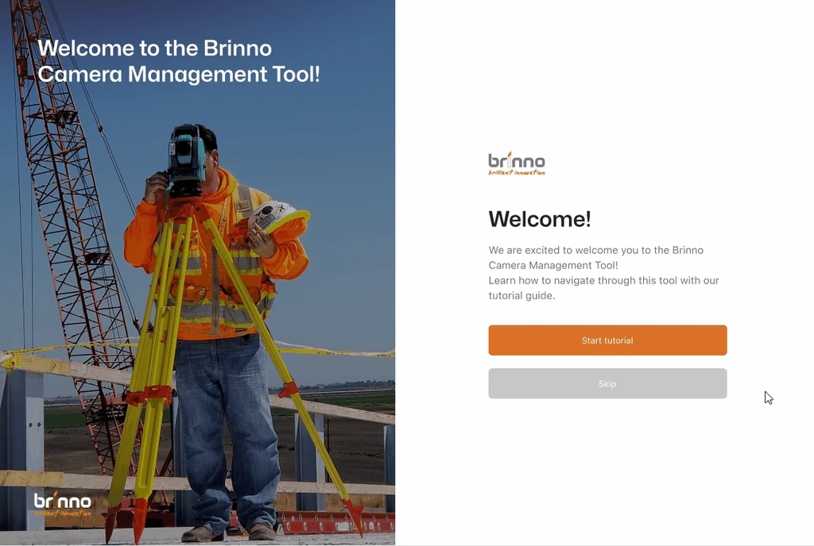
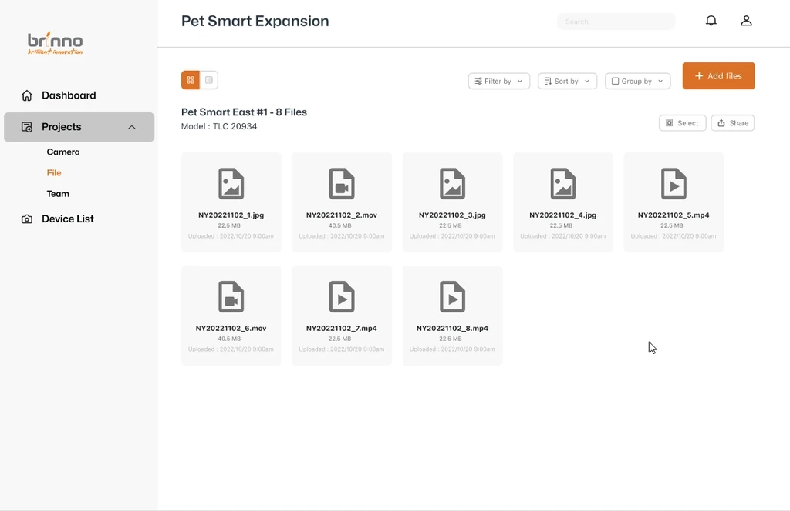
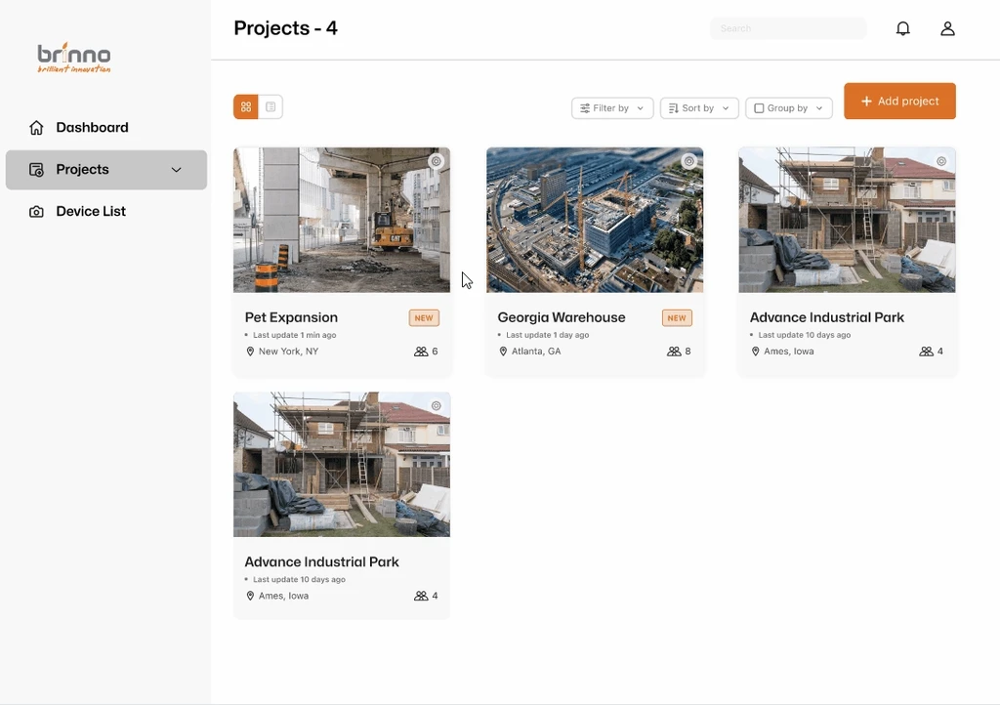
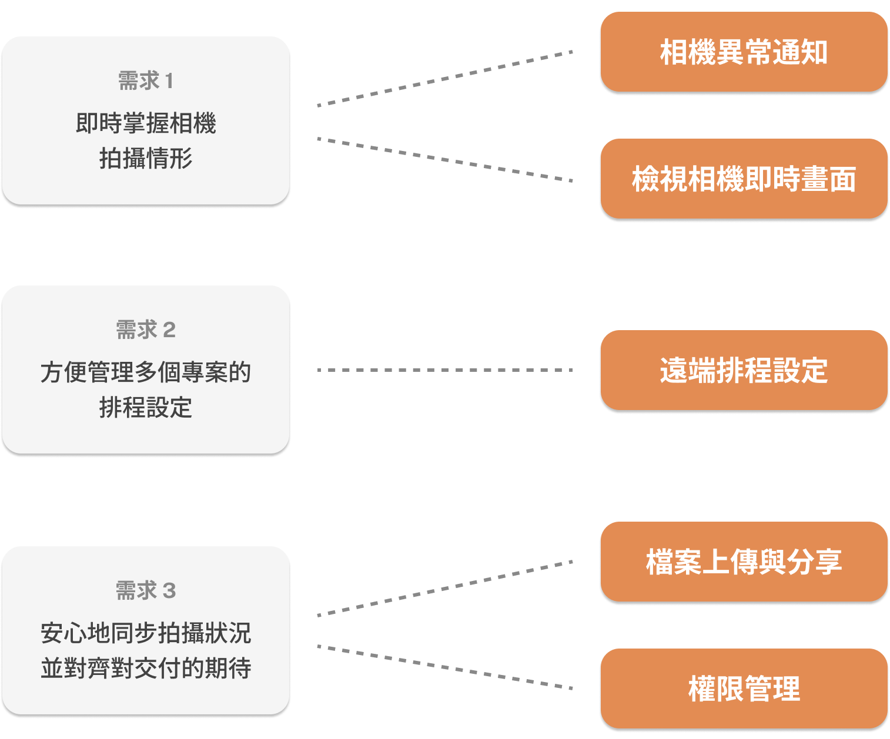
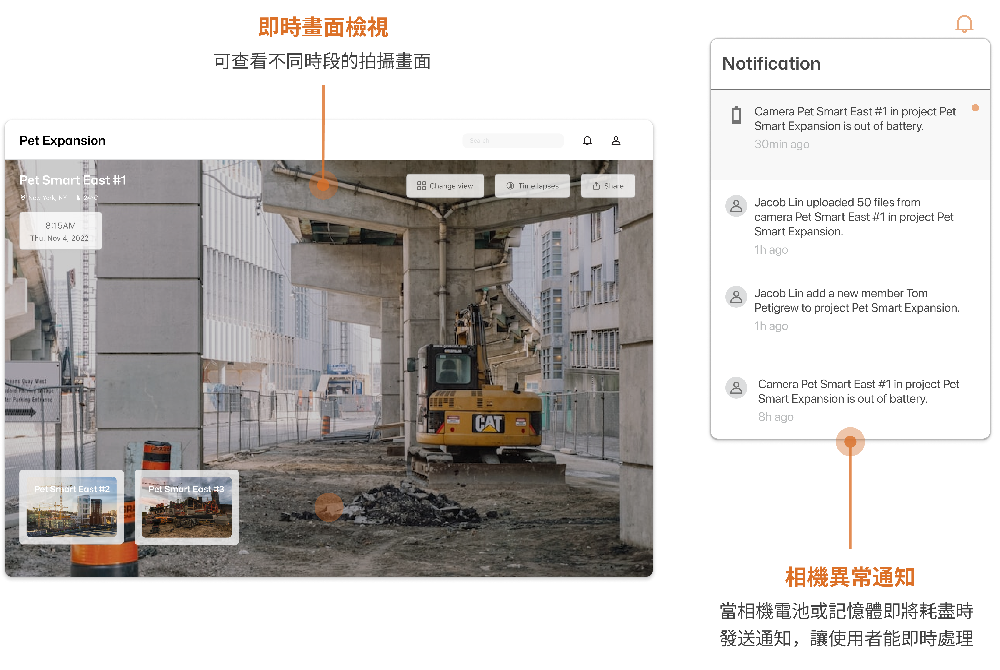
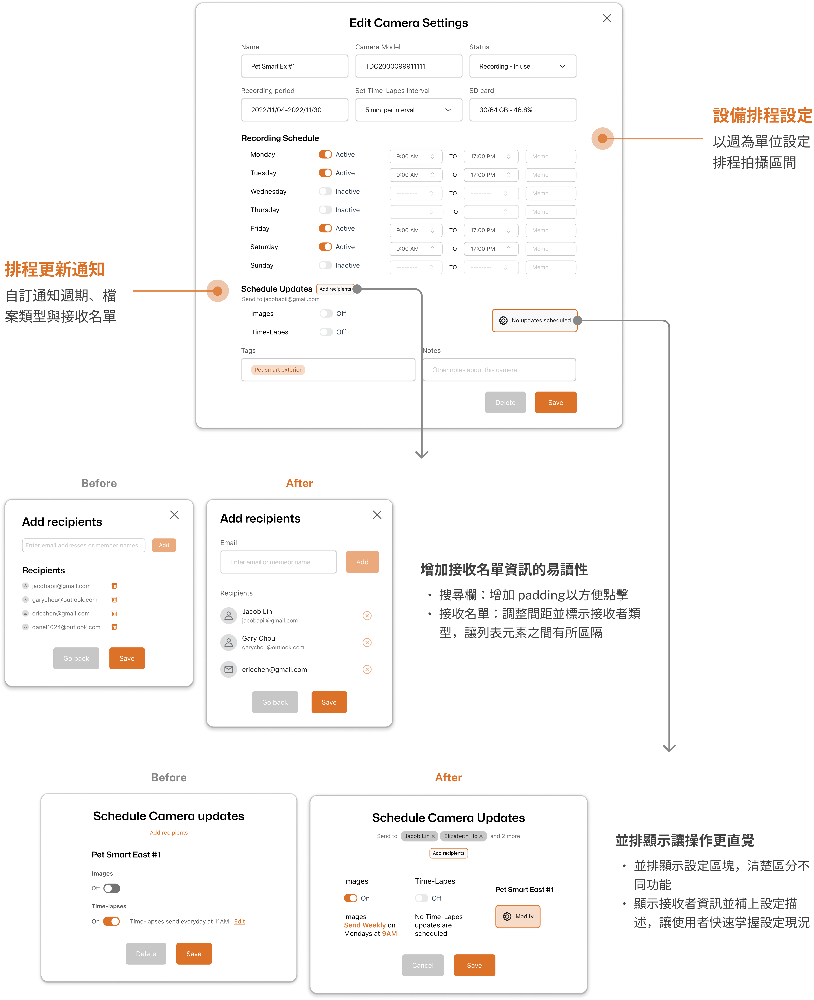
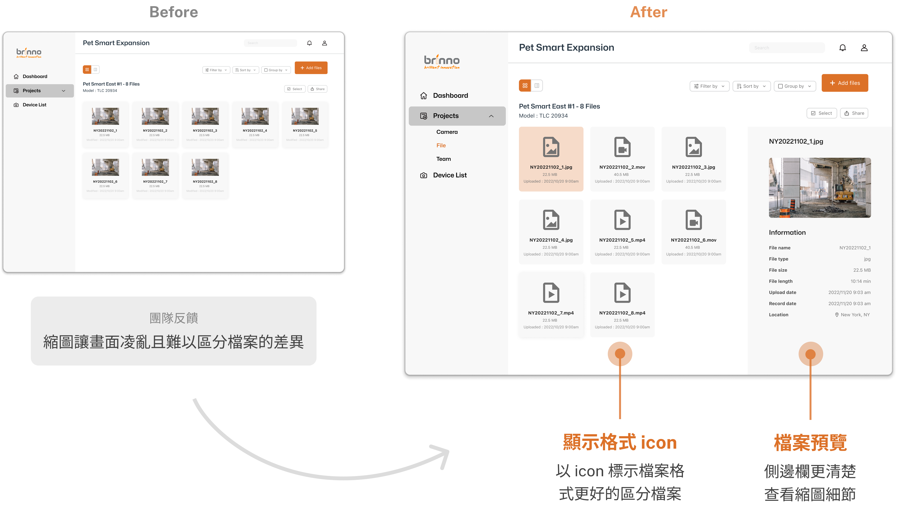
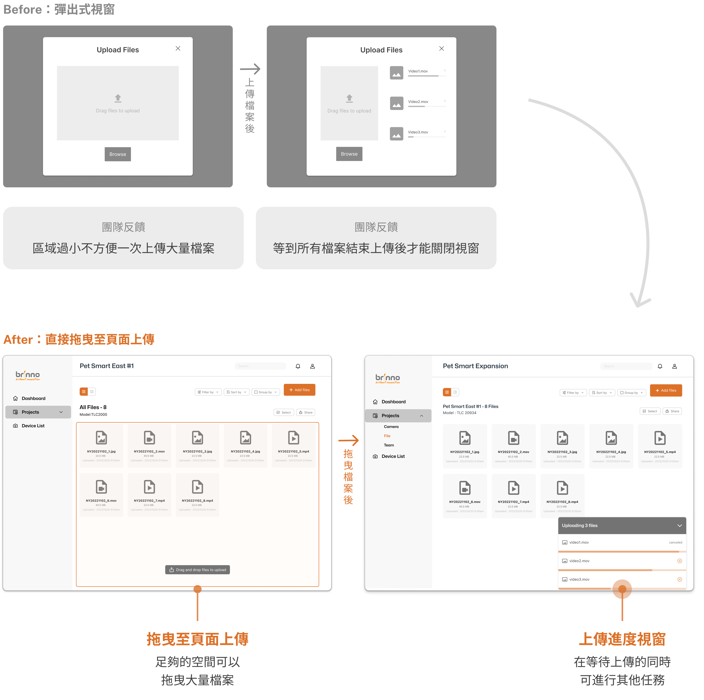
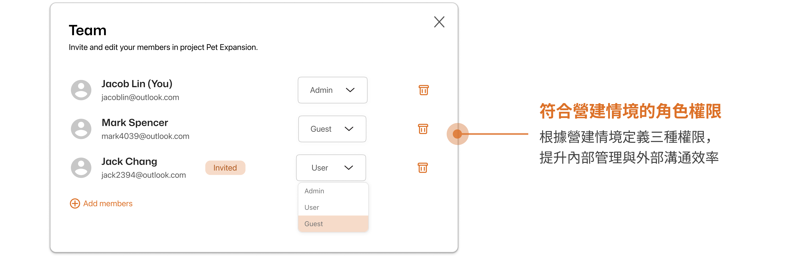

Remote camera management for construction sites
In an industry–academia collaboration between National Taiwan University and Brinno, a time-lapse camera maker, I designed the Camera Management Tool. It lets construction photography teams check live footage and camera status across projects remotely, instead of spending time and labor on site visits.
Turning a manual, on-site process into a software service
What's broken in construction camera management today?
Construction projects rely on time-lapse cameras to document progress and site safety, and contractors usually hire professional photographers to manage them. But photographers have to visit each site in person to check on their cameras — if a camera fails and nobody notices in time, critical footage can be lost.
Who is Brinno, and what did they want?
Brinno makes time-lapse cameras. It wanted to extend the value of its hardware with software — making devices easier to manage, and raising customer satisfaction and purchase intent along the way.
Project goal: Build a camera management tool that lets construction photography teams monitor cameras in real time, saving the time and labor of site visits

Three core features
01Live monitoring & scheduling
Check live footage and set capture schedules remotely — no trip to the site required.

02Batch upload & sharing
Upload large batches of time-lapse files and share view-only files with clients to align on deliverables early.

03Role-based permissions for construction teams
Assign roles that match how construction projects are run, making internal management and client communication more efficient.

Interviewing stakeholders to understand who does what
We had one month to complete user research and an initial platform architecture. To quickly map stakeholders’ behaviors and pain points across each stage of camera management, we structured our interviews around a user journey map and spoke with:
- 2 employees at a photography company
- 1 freelance photographer
- 2 construction managers
Finding the key pain points along the journey
I then focused on the two stages most relevant to camera management — during and after construction — and mapped the pain points of photographers, of contractors, and those they share.

Key insight: Photographers and contractors fall out of sync at every stage of a project. Neither has a consistent view of camera status, settings, or delivery requirements, which leads to rework and extra management overhead.
From pain points to design opportunities
Because photographers and contractors see devices and deliverables differently, managing them is inefficient. We saw an opportunity for the tool to connect photographers, contractors, and devices — so information flows freely among all three.


How might we help photographers & contractors stay in sync, confidently and efficiently, while managing cameras across multiple projects?
Generating features from user needs
I looked to existing live camera platforms for inspiration, then mapped ideas back to our research insights to propose features that meet real user needs.

Information architecture
Once the core features were set, I planned the information architecture. Users manage work by project, and each device produces a large volume of time-lapse files, so I organized the main flow as a project → device → file hierarchy.

Four solutions for the key gaps in the journey
We first listed every usage scenario for the core pages so no part of the flow was missed, then turned early concepts into wireflows to share with the team and refine based on their feedback. Here’s the design after several rounds of iteration:
01Live camera view & anomaly alerts
User need — Know what each camera is capturing, in real time

02Remote scheduling
User need — Manage capture schedules across multiple projects

03File upload & sharing
User need — Share capture status with confidence and align on deliverables


04Permission management
User need — Give internal teams and clients the right level of access

A design system for consistency and faster handoff
I defined shared guidelines for color, typography, and core UI components, speeding up developer handoff and giving future features a foundation to build on.

An MVP that solves core pain points and sets up future development
After 10+ user-flow iterations, we delivered an MVP covering live monitoring, file management, and permissions. Photographers can track camera status in real time and make fewer site visits, and photographers and contractors now share one channel for keeping information in sync.
Reflections & learnings
01Identify every stakeholder early
I initially assumed contractors were the only ones managing construction cameras; the interviews shifted my focus to the photographers who actually do the work. In an unfamiliar domain, identifying every stakeholder early — and how they work together — is what lets you define the right users.
02Use early hypotheses to build alignment
We had little time for research up front and later spent a long time confirming technical feasibility. I learned to form hypotheses from existing data, then test and refine them with the team. It meant working with more uncertainty, but we reached feedback and alignment much faster.
03Domain knowledge is a shortcut to empathy
With limited access to interviewees, next time I’d invest more in desk research at the start. Understanding the industry makes it much easier to empathize with users.